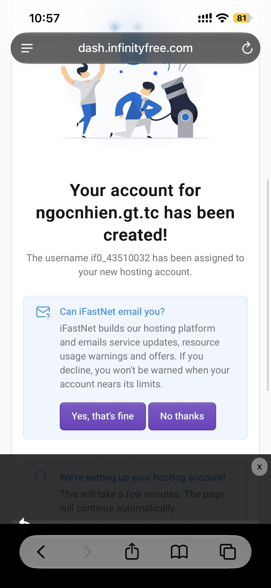
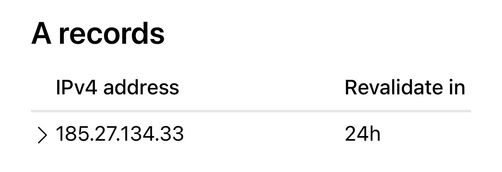

Yêu cầu
- Tìm và đăng ký một tên miền miễn phí, xác nhận qua email.
- Vào phần quản lý domain → Nameservers để xem nameserver mặc định.
- Kiểm tra DNS bằng lệnh
nslookup ten-mientrong Command Prompt / Terminal.
👉 Domain đã đăng ký: ngocnhien.gt.tc (subdomain miễn phí của InfinityFree)
1. Đăng ký domain ngocnhien.gt.tc thành công

2. Kiểm tra DNS (nslookup ngocnhien.gt.tc)
Bản ghi A trả về IPv4 185.27.134.33 → DNS đang hoạt động.
